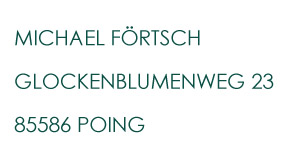

Imprint.
Information pursuant to § 5 TMG

Contact
Responsible for Content pursuant to § 55 Abs. 2 RStV
Liability for Content
As a service provider, we are responsible for our own content on these pages under general law in accordance with Section 7 (1) of the German Telemedia Act (TMG). According to Sections 8 to 10 of the TMG, however, we are not obligated to monitor transmitted or stored third-party information or to investigate circumstances that indicate illegal activity.
Liability for Links
Our site contains links to external websites of third parties over whose contents we have no influence. Therefore, we cannot assume any liability for these external contents. The respective provider or operator of the pages is always responsible for the content of the linked pages.
Copyright
The content and works created by the site operators on these pages are subject to German copyright law. Duplication, processing, distribution, and any form of commercialization outside the limits of copyright law require the written consent of the respective author or creator. Downloads and copies of this site are only permitted for private, non-commercial use.